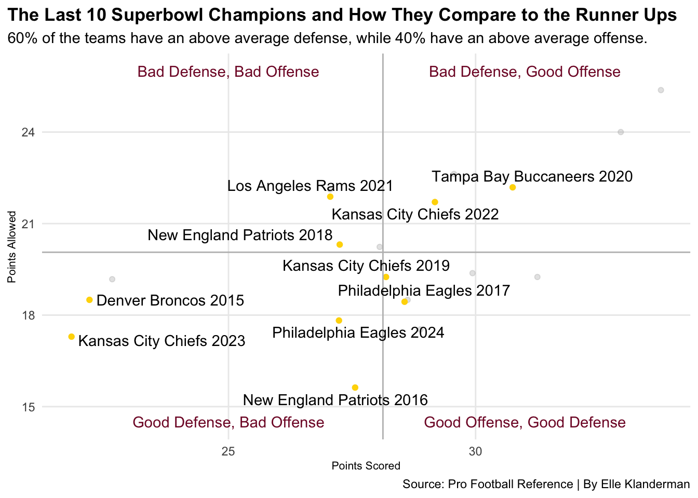

Code
library(tidyverse)
library(ggalt)
library(ggtext)
library(ggbeeswarm)
library(ggrepel)
library(waffle)
library(gt)
nfloffense24 <- read_csv("nfloffense24.csv") |>
mutate(Season= 2024, TeamSeason= paste(Team,Season))
nfloffense23 <- read_csv("nfloffense23.csv") |>
mutate(Season= 2023, TeamSeason= paste(Team, Season))
nfloffense22 <- read_csv("nfloffense22.csv") |>
mutate(Season= 2022, TeamSeason= paste(Team, Season))
nfloffense21 <- read_csv("nfloffense21.csv") |>
mutate(Season= 2021, TeamSeason= paste(Team, Season))
nfloffense20 <- read_csv("nfloffense20.csv") |>
mutate(Season= 2020, TeamSeason= paste(Team, Season))
nfloffense19 <- read_csv("nfloffense19.csv") |>
mutate(Season= 2019, TeamSeason= paste(Team, Season))
nfloffense18 <- read_csv("nfloffense18.csv") |>
mutate(Season= 2018, TeamSeason= paste(Team, Season))
nfloffense17 <- read_csv("nfloffense17.csv") |>
mutate(Season= 2017, TeamSeason= paste(Team, Season))
nfloffense16 <- read_csv("nfloffense16.csv") |>
mutate(Season= 2016, TeamSeason= paste(Team, Season))
nfloffense15 <- read_csv("nfloffense15.csv") |>
mutate(Season= 2015, TeamSeason= paste(Team, Season))
nfloffense <- bind_rows(nfloffense24, nfloffense23, nfloffense22, nfloffense21, nfloffense20, nfloffense19, nfloffense18, nfloffense17, nfloffense16, nfloffense15) |>
select(-Rank)
nfldefense24 <- read_csv("nfldefense24.csv")|>
mutate(Season= 2024, TeamSeason= paste(Team,Season))
nfldefense23 <- read_csv("nfldefense23.csv")|>
mutate(Season= 2023, TeamSeason= paste(Team,Season))
nfldefense22 <- read_csv("nfldefense22.csv")|>
mutate(Season= 2022, TeamSeason= paste(Team,Season))
nfldefense21 <- read_csv("nfldefense21.csv")|>
mutate(Season= 2021, TeamSeason= paste(Team,Season))
nfldefense20 <- read_csv("nfldefense20.csv")|>
mutate(Season= 2020, TeamSeason= paste(Team,Season))
nfldefense19 <- read_csv("nfldefense19.csv")|>
mutate(Season= 2019, TeamSeason= paste(Team,Season))
nfldefense18 <- read_csv("nfldefense18.csv")|>
mutate(Season= 2018, TeamSeason= paste(Team,Season))
nfldefense17 <- read_csv("nfldefense17.csv")|>
mutate(Season= 2017, TeamSeason= paste(Team,Season))
nfldefense16 <- read_csv("nfldefense16.csv")|>
mutate(Season= 2016, TeamSeason= paste(Team,Season))
nfldefense15 <- read_csv("nfldefense15.csv")|>
mutate(Season= 2015, TeamSeason= paste(Team,Season))
nfldefense <- bind_rows(nfldefense24, nfldefense23, nfldefense22, nfldefense21, nfldefense20, nfldefense19, nfldefense18, nfldefense17, nfldefense16, nfldefense15) |> select(-Rank)
cfboffense24 <- read_csv("cfboffense24.csv")|>
mutate(Season= 2024, TeamSeason= paste(School,Season))
cfboffense23 <- read_csv("cfboffense23.csv")|>
mutate(Season= 2023, TeamSeason= paste(School,Season))
cfboffense22 <- read_csv("cfboffense22.csv")|>
mutate(Season= 2022, TeamSeason= paste(School,Season))
cfboffense21 <- read_csv("cfboffense21.csv")|>
mutate(Season= 2021, TeamSeason= paste(School,Season))
cfboffense20 <- read_csv("cfboffense20.csv")|>
mutate(Season= 2020, TeamSeason= paste(School,Season))
cfboffense19 <- read_csv("cfboffense19.csv")|>
mutate(Season= 2019, TeamSeason= paste(School,Season))
cfboffense18 <- read_csv("cfboffense18.csv")|>
mutate(Season= 2018, TeamSeason= paste(School,Season))
cfboffense17 <- read_csv("cfboffense17.csv")|>
mutate(Season= 2017, TeamSeason= paste(School,Season))
cfboffense16 <- read_csv("cfboffense16.csv")|>
mutate(Season= 2016, TeamSeason= paste(School,Season))
cfboffense15 <- read_csv("cfboffense15.csv")|>
mutate(Season= 2015, TeamSeason= paste(School,Season))
cfboffense <- bind_rows(cfboffense24, cfboffense23, cfboffense22, cfboffense21, cfboffense20, cfboffense19, cfboffense18, cfboffense17, cfboffense16, cfboffense15)
cfbdefense24 <- read_csv("cfbdefense24.csv") |>
mutate(Season= 2024, TeamSeason= paste(School,Season))
cfbdefense23 <- read_csv("cfbdefense23.csv") |>
mutate(Season= 2023, TeamSeason= paste(School,Season))
cfbdefense22 <- read_csv("cfbdefense22.csv") |>
mutate(Season= 2022, TeamSeason= paste(School,Season))
cfbdefense21 <- read_csv("cfbdefense21.csv") |>
mutate(Season= 2021, TeamSeason= paste(School,Season))
cfbdefense20 <- read_csv("cfbdefense20.csv") |>
mutate(Season= 2020, TeamSeason= paste(School,Season))
cfbdefense19 <- read_csv("cfbdefense19.csv") |>
mutate(Season= 2019, TeamSeason= paste(School,Season))
cfbdefense18 <- read_csv("cfbdefense18.csv") |>
mutate(Season= 2018, TeamSeason= paste(School,Season))
cfbdefense17 <- read_csv("cfbdefense17.csv") |>
mutate(Season= 2017, TeamSeason= paste(School,Season))
cfbdefense16 <- read_csv("cfbdefense16.csv") |>
mutate(Season= 2016, TeamSeason= paste(School,Season))
cfbdefense15 <- read_csv("cfbdefense15.csv") |>
mutate(Season= 2015, TeamSeason= paste(School,Season))
cfbdefense <- bind_rows(cfbdefense24, cfbdefense23, cfbdefense22, cfbdefense21, cfbdefense20, cfbdefense19, cfbdefense18, cfbdefense17, cfbdefense16, cfbdefense15)
nfltotal_def <- nfldefense |>
select(Team, Season, TeamSeason, YdsPerPlay, PassAtt, Turnovers, G) |>
rename(DefYdsPerPlay = YdsPerPlay) |>
rename(TotalPointsAllowed = PassAtt) |>
rename(Takeaways = Turnovers)
nfltotal_off <- nfloffense |>
select(Team, Season, TeamSeason, YdsPerPlay, Points, Turnovers, Games) |>
rename(OffYdsPerPlay = YdsPerPlay) |>
rename(TotalPointsScored = Points)
nfltotalwrong <- nfltotal_def |> inner_join(nfltotal_off)
nfltotal <- nfltotalwrong |>
filter(!Team %in% c("Avg Team", "League Total", "Avg Tm/G")) |>
mutate(PointsAllowed = TotalPointsAllowed/G) |>
mutate(PointsScored = TotalPointsScored/Games)
cfbdefensenew <- cfbdefense |>
mutate(defypp = TotYds/Plays)
cfboffensenew <- cfboffense |>
mutate(ypp = Yds/Plays)
cfbtotal_def <- cfbdefensenew |>
select(School, Season, TeamSeason, defypp, Pts, TO) |>
rename(PointsAllowed = Pts) |>
rename(Takeaways = TO)
cfbtotal_off <- cfboffensenew |>
select(School, Season, TeamSeason, ypp, Pts, TO_Tot) |>
rename(PointsScored = Pts) |>
rename(Turnovers = TO_Tot)
cfbtotal <- cfbtotal_def |> inner_join(cfbtotal_off)
nflsuperbowl <- nfltotal |>
filter(TeamSeason %in% c("Denver Broncos 2015", "Carolina Panthers 2015", "New England Patriots 2016", "Atlanta Falcons 2016", "Philadelphia Eagles 2017", "New England Patriots 2017", "New England Patriots 2018", "Los Angeles Rams 2018", "Kansas City Chiefs 2019", "San Francisco 49ers 2019", "Tampa Bay Buccaneers 2020", "Kansas City Chiefs 2020", "Los Angeles Rams 2021", "Cincinnati Bengals 2021", "Kansas City Chiefs 2022", "Philadelphia Eagles 2022", "Kansas City Chiefs 2023", "San Francisco 49ers 2023", "Philadelphia Eagles 2024", "Kansas City Chiefs 2024"))
nflsuperbowlwinners <- nfltotal |>
filter(TeamSeason %in% c("Denver Broncos 2015", "New England Patriots 2016", "Philadelphia Eagles 2017", "New England Patriots 2018", "Kansas City Chiefs 2019", "Tampa Bay Buccaneers 2020", "Los Angeles Rams 2021", "Kansas City Chiefs 2022", "Kansas City Chiefs 2023", "Philadelphia Eagles 2024"))
cfbchampionship <- cfbtotal |>
filter(TeamSeason %in% c("Alabama 2015", "Clemson 2015", "Clemson 2016", "Alabama 2016", "Alabama 2017", "Georgia 2017", "Clemson 2018", "Alabama 2018", "Clemson 2019", "LSU 2019", "Ohio State 2020", "Alabama 2020", "Georgia 2021", "Alabama 2021", "TCU 2022", "Georgia 2022", "Washington 2023", "Michigan 2023", "Ohio State 2024", "Notre Dame 2024"))
cfbchampionshipwinners <- cfbtotal |>
filter(TeamSeason %in% c("Alabama 2015", "Clemson 2016", "Alabama 2017", "Clemson 2018", "LSU 2019", "Alabama 2020", "Georgia 2021", "Georgia 2022", "Michigan 2023", "Ohio State 2024"))
ggplot() +
geom_point(
data=nflsuperbowl,
aes(x=PointsScored, y=PointsAllowed),
color="darkgrey",
alpha=.3) +
geom_point(
data=nflsuperbowlwinners,
aes(x=PointsScored, y=PointsAllowed),
color="gold") +
geom_vline(aes(xintercept = 28.12518), color="grey") +
geom_hline(aes(yintercept = 20.06011), color= "grey") +
geom_text(aes(x=31, y=14.5, label="Good Offense, Good Defense"), color="#811331") +
geom_text(aes(x=25, y=26, label="Bad Defense, Bad Offense"), color="#811331") +
geom_text(aes(x=25, y=14.5, label="Good Defense, Bad Offense"), color="#811331") +
geom_text(aes(x=31, y=26, label="Bad Defense, Good Offense"), color="#811331") +
geom_text_repel(
data=nflsuperbowlwinners,
aes(x=PointsScored, y=PointsAllowed, label=TeamSeason)
) +
labs(
x="Points Scored",
y="Points Allowed",
title="The Last 10 Superbowl Champions and How They Compare to the Runner Ups",
subtitle="60% of the teams have an above average defense, while 40% have an above average offense.",
caption="Source: Pro Football Reference | By Elle Klanderman"
) +
theme_minimal() +
theme(
plot.title = element_text(size = 13, face = "bold"),
axis.title = element_text(size = 8),
plot.subtitle = element_text(size=11),
panel.grid.minor = element_blank(),
plot.title.position = "plot"
) 